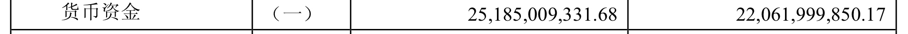
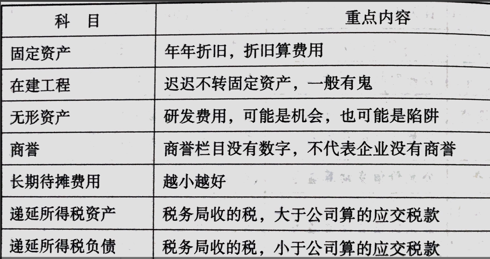

如何读财报？
基础知识--三张表
资产负债表
资产负债表，是企业在报表日结束那一刻，资产、负债及权益的定格照片。
表的右边，是钱的来源；
表的左边，是钱的去处；
表的右边--钱的来源
钱的来源，不外乎借债或股东投入，所以，表的右边，分为负债和权益两大项。
负债告诉你，公司的家当里，有多少是借的钱；
权益告诉你，有多少是股东的钱。
表的左边--钱的去处，组成企业资产
最容易变现的是货币，放在最前面；
最不易变现的固定资产、无形资产、商誉等，放在最后面。
如何看？
可以对照以前的看，了解每个单项是怎么变的。闭上眼，想象自己是老板，把各项资产如此这般的腾挪，想想为什么这么干，干得对不对，这是看财报时最享受的事情。如何自信心不够，就把所有数字同比缩小到自己日常习惯驾驭的数字级别，然后之巅江山。
另一个重要的方法是跟同行比照着看，看不同项目总资产中占比有何不同，思考为何不同，这不同是优势还是劣势。尤其是应收票据、应收账款、应付账款、预付款项几个项目，可以看出公司与上下游之间的地位，展示公司竞争力的强弱。
利润表--也叫“损益表”
容易造假的根源是：权责发生制 1
不考虑投资收益和资产减值损失的话，收入减去各类支出，就是营业利润。营业利润是一家公司的核心利润，是持续竞争力的体现，是利润表上最需要重点关注的数字。
营业利润 + 主营业务以外的收支 = 利润总额 （营业外收支占比达的公司，一般要警惕，都是些不让人省心的货）
利润总额 - 所得税 = 净利润
注：上市公司报表里的收入，是不含增值税的。 17%
投资者可以将成本、税收、费用各自占收入的比例，与同行对比、与历史对比。如果比例异常，就要去财报附注里寻找解释。如果解释不足与另你放心，就放弃这家公司。投资原则：市场利润无穷，自己本金有限。 宁可错杀而少赚，也不能踩雷亏本。
并非每家子公司由上市公司100%持股，那些在子公司里占点股的小股东，他们的股份对应的资产，在资产负债表里叫做“少数股东权益”；他们的股份对应的利润或亏损，在利润表里叫做“少数股东损益”
从净利中去掉它，剩下部分，便是报告期内上市公司股东拥有的净利润了，报表上的这一项叫：归属母公司所有者的净利润。
归属母公司所有者的净利润/公司总股数 = 每股收益
市盈率（PE）2 = 股票价格/每股收益 没有什么神秘，是投资回报率的倒数
现金流量表
记录公司现金的流入和流出。
由于现金收益率为零，所以无论是公司还是个人，都不会持有大量的现金，而是选择存银行或购买理财产品，这类东西被称为“现金等价物”
现金流量表负责展示资产负债表货币资金科目里“现金及现金等价物”的变化过程。
获取上市公司财报
巨潮咨询： www.cninfo.com.cn
上交所：www.sse.com.cn
深交所：www.szse.cn
中国证券会 www.csrc.gov.cn
财报分析--贵州茅台 600519
13年年报 下载地址

财报中若没有这条，即会计事务所不愿意发表“标准无保留意见”，完全可以理解为会计师热为账目有问题，收钱有风险。
| 会计师出具意见 | 会计师真实意思 |
|---|---|
| 标准无保留意见的审计报告 | 造假痕迹未被本人发现 |
| 附带说明的无保留意见的审计报告 | 黑锅有人背，本人大胆收钱 |
| 保留意见的审计报告 | 假报表，别看了 |
| 无法出具意见的审计报告 | 本人拒绝和拙劣的骗子合作 |
| 否定意见审计报告 | 本人具备诈骗犯 |
资产负债表分析
尝试着按照货币资金、经营相关资产、生产相关资产、投资相关资产 四类分析公司资产。
经营相关资产，主要指应收、预付和存货；
生产相关资产，主要指固定资产、在建工程、无形资产、商誉和递延等科目；
投资相关资产，公司持有的各类证券、债券、理财、其他金融资产和投资性房地产；
货币资金：


对于货币资金的分析原则： 货币资金需要与短期债务及经营需要相匹配。
与短期债务的匹配情况，代表企业的偿债能力；
与经营需要的匹配情况，代表企业的资金运用能力；
货币资金过小，则可能代表偿债能力不足，或者经营中捉襟见肘。
货币资金过大，则代表资金运用能力较弱，或者可能资金性质有问题。

如上图所示，茅台公司，没有息负债；经营活动中持续产生大量现金流入；投资计划加分红计划累计不超过百亿；账面上保留着超过200亿现金及现金等价物，属于典型的资金运用能力低下。
经营相关资产
销售行为发生，要么收了现金，要么收了票据，要么变成应收账款。
应收票据
分为：
- 银行承兑汇票 （靠谱一些，损失货币的时间价值，可提前支取需『贴现』）
- 商业承兑汇票（视企业现金流状况而定）

应收票据全部由银行承兑汇票组成，证明企业地位强势，产品抢手。
应收账款
俗称 赊销，白条子。 现如今，大部分产品都是买方市场，通行模式是先拿货，一段时间后付款。
陷阱：权责发生制容易在应收账款项做收入，如当年的长虹45亿的应收账款。
预付账款
一家公司，如果经常需要预付大量款项给供应商，一般说明企业在商业生态链上地位不高或信用不好。
陷阱：大量预付款出去，然后通过营业收入回来虚增利润。
应收利息和应收股息
应收利息：是公司持有各类债权期间应该收到的利息；
应收股息：公司持有股权期应该收到的其他公司分配的股息
其他应收款
优秀的上市公司有个特点，就是『其他应收款』和『其他应付款』科目涉及金额极小，甚至为零。如果金额大一般给人经营不够规范的初步印象。
本节要点
| 科目 | 关注要点 |
|---|---|
| 应收票据 | 银行承兑汇票和商业承兑汇票的不同意义 |
| 应收账款 | 应收账款增长幅度及坏账准备计提政策 |
| 其他应收款 | 越小越好，为零最好 |
| 存货 | 存货和营业成本的合理比例 |
生产相关资产
固定资产
对于这个科目，知道以下5点足矣
- 固定资产要计提折旧。买资产的时候，已经付钱出去了，但这个购买成本要摊在资产的生命周期里。因此，虽然不用付现金出去，但折旧要作为公司当期经营的费用，从利润表里扣除。
- 除了折旧，固定资产年末（或季度末）还需要进行减值测试。
- 折旧政策有好几种，使用哪种，无需深究，但突然改变折旧政策，需要小心。
- 因为折旧费用，需要从利润表中扣除，会减少当期利润。优秀的公司一般倾向于用快速折旧的方法，增加前期费用，减少前期利润，将利润推到以后年分去；相反，一些今日不管明日事的公司，则倾向于拉长折旧时间。
- 折旧并不意味着真的产生损失了，有些固定资产年年折旧，账面价值极低甚至为零。但事实上，他们可能随着时间的推移，实际价值或者没有那么大降幅，甚至还有增长。如企业购买的城区房产，这块资产常常是报表中潜伏的公司价值，这种潜伏价值，因其容易成为股价的催化剂而被许多投资人关注。
在建工程和工程物资
在建工程不需要计提折旧，因此，如果一家公司在建工程数目巨大，迟迟不转入固定资产科目，投资者一般需要对其采取怀疑态度。一般有两种可能：
1. 工程已经完工并投入使用，但为了避免折旧，美化当前利润，而不将其转为固定资产；
2. 通过在建工程将公司的钱支付给虚构或关联的供应商，然后再以采购公司商品和服务的名义，变成收入回流公司。这种在建工程，最后往往通过大比例折旧或者以意外损毁等名义，计提高额减值损失，光明正大的『毁尸灭迹』。
无形资产
包括专利权、商标权、著作权、土地使用权、特许权、版权和非专利技术等。无形资产是资产，所以也需要和固定资产一样需要『折旧』，成为：摊销。
递延所得税资产和负债
由于税务局计算的公司利润和公司财务算的不一样，可能大于公司产生的利润，也可能小于公司计算的利润，递延所得税资产和负债便因此而产生了。
凡是在递延所得税资产或负债里的，都只是税务局和公司财务关于收入和费用应该本期算还是以后算的分歧。
产生递延所得税资产、负债的部分常见情形：

本节重点

投资相关资产
交易性金融资产
如果公司把 债券、股票、基金、权证等金融资产放进『交易性金融资产』科目，证明公司是打算短期持有来获取差价。公司只是『打算』短期持有，至于最终持有多久，不重要也没人管。
公司的投资一旦放进这个科目，是不允许转换到其他科目的。
交易性金融资产的特点是不需要计提折旧减值，直接以持有期间的公允价值变动，作为该项资产的当期损益，进入利润表的『公允价值变动收益』科目，影响公司当期利润。
交易费用作为当期费用，从利润表扣除。
持有期间产生的利息和分红，作为投资收益，加进利润里。
不卖出，税务局不收税！
持有至到期投资
本节要点

负债和所有者权益
负债
从两个角度看负债：
负债的来源
经营性负债
伴随企业经营性活动产生的，包括各类应付xx，应交xx，预收账款等。
分配性负债
伴随企业的盈利而产生的，主要指应付股利和应交所得税。
（如果看见公司实施大额现金分红时，请多想一分钟吧）融资性负债
一般是有息负债。
是否承担利息 分为有息负债和无息负债